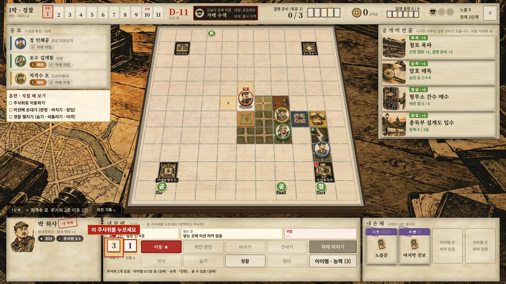
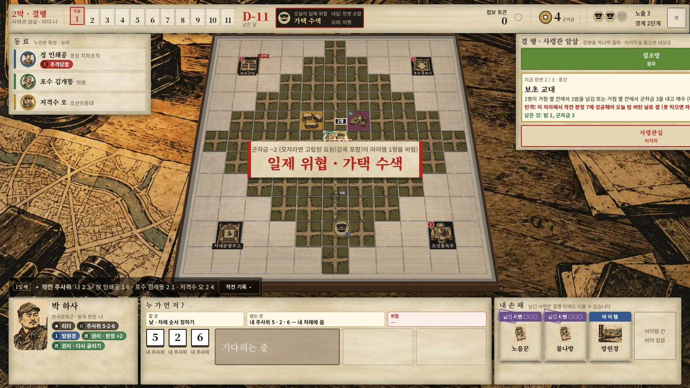
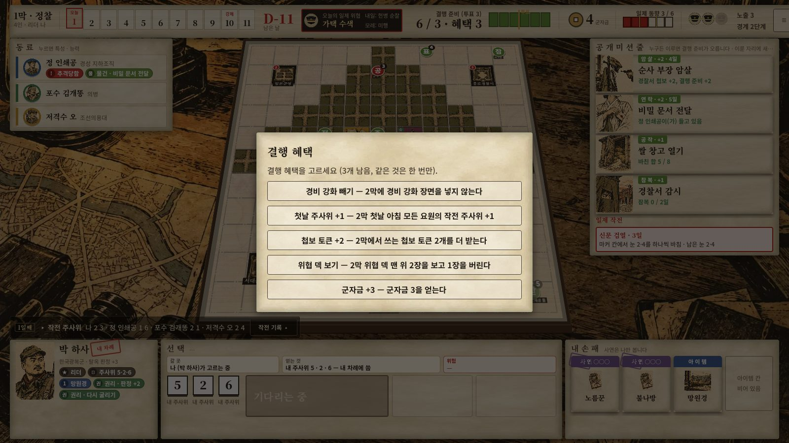
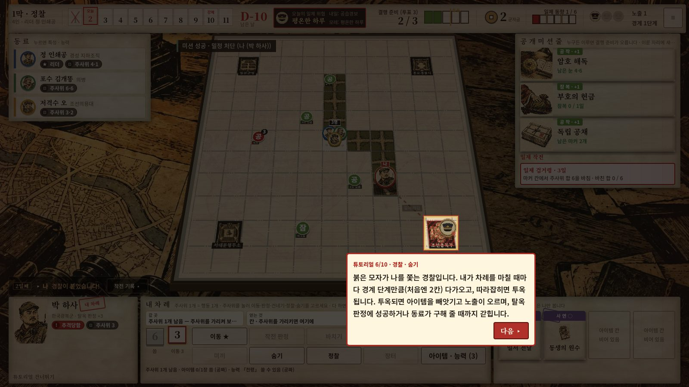

컨셉
그 작전이 실행되었다면
광복군은 국내 진공 작전을 준비했지만, 8월 15일 일본이 먼저 항복해 실행하지 못했다. 「결사」는 그 작전이 실행된 평행세계다. 플레이어는 광복군 · 조선의용대 · 의병의 첩보 요원이 되어, 열하루 안에 경성의 일제 거점 하나를 무너뜨린다.
핵심 재미 셋
1
큰 눈을 어디에 쓸까
아침에 내 작전 주사위 2개를 굴린다. 주사위 1개가 행동 1개. 6을 멀리 가는 데 쓸지, 판정(낸 눈 + 새 주사위)에 남길지 매일 고른다.
2
1막에서 모으고, 2막에서 친다
1막에는 미션으로 첩보와 결행 준비를 모은다. 투표로 칠 거점을 정하면, 2막에서 그 거점의 장면을 하나씩 뚫는다.
3
조여 오는 일제
짝수 날마다 일제 작전이 나온다. 못 막을 때마다 동향이 오르고 벌칙이 커진다. 노출 · 경찰 추격 · 투옥이 계속 압박한다.
하루의 흐름
아침각자 작전 주사위를 굴림 · 오늘의 위협 · 공개 미션 줄
낮각자 차례: 주사위를 하나씩 내어 이동 · 판정 · 바치기 · 건네기 · 숨기
밤쫓는 경찰이 다가옴 · 미션 기한 · 남은 주사위는 사라짐
두 막 구조
1막 · 정찰미션으로 첩보 · 결행 준비 · 군자금을 모음. 일제 작전을 막음
결행 투표준비 3 이상이면 투표. 칠 거점을 고르고, 남은 준비로 혜택을 고름
2막 · 결행거점의 장면을 하나씩 돌파. 버티는 날엔 반격을 막아야 함
엔딩성공 · 실패 · 역사대로. 숨긴 사연의 후일담
열하루 안에 끝내야 한다. 노출이 끝까지 차거나, 모두 갇히거나, 날이 다하면 진다.

1막: 아래 내 주사위(3 · 1)와 행동 단추, 오른쪽 공개 미션 줄. 미션은 보드에 마커로 놓인다.

2막: 군영 결행. 오른쪽에 돌파할 장면, 가운데 오늘의 일제 위협.

결행 혜택: 준비 3을 넘긴 몫만큼 고른다. 「지금 칠까, 더 쌓을까」.

튜토리얼 10레슨: 개념을 먼저 설명하고, 누를 곳만 밝힌다.
숫자로 보는 결사
| 콘텐츠 | 요원 12 · 미션 22 · 일제 작전 4 · 위협 22 · 사연 20 · 2막 장면 24 · 거점 4 · 엔딩 4갈래 |
|---|
| 밸런스 | AI 4명 1,000판 승률 53.3%(목표 45~55%) · 결행 대상별 격차 6.0%p · 멈춘 판 0 |
|---|
| 제품 | itch.io 웹 공개 · 저장/이어하기 · 튜토리얼 10레슨 · 온라인 방(공개 목록) |
|---|
내 역할과 제작 방식
설계는 내가, 손은 AI 도구가
내가 한 일
- 원작: 게임 기획 학원 팀 과제 「결사」의 팀장, 메인 아이디어(평행세계 조국 탈환작전 · 첩보 협력)
- 디지털판 v2: 규칙 재설계와 기획 결정 전반. 규칙과 모든 결정, 레퍼런스 조사 방향, 비평에서 받을 것과 거를 것, 우선순위, 출시 뒤 수정
- 직접 플레이하며 문제 찾기
AI 도구가 한 일
- 내가 쓴 규칙 문서 · 지시서대로 Godot 구현
- AI 동료로 1,000판 시뮬레이션
- 그림 생성(프롬프트는 함께 작성)
- 조사 자료 · 문서 정리
기획부터 검증까지 일한 방식
- 문제를 적는다. 해 보고 재미없던 순간을 한 문장으로.
- 레퍼런스를 조사하고 후보를 2~4개 낸다.
- 고르고, 규칙 문서와 구현 지시서로 쓴다.
- 구현시키고 잰다. AI 4명 1,000판, 같은 시드로 전후 비교.
- 원인을 가른다. 규칙이 문제인가, AI가 못 하는 것인가.
- 비평을 받고 거른다. 다른 AI(GPT)의 비평 중 내 목표에 맞는 것만.
2026년 10월 1일 ~ 8일 · 설계 문서 20여 개 · 커밋 100여 개 · itch.io 공개. 사람 플레이테스트는 아직 없어서, AI 승률을 「사람보다 약한 플레이어의 아래쪽 기준」으로 본다.